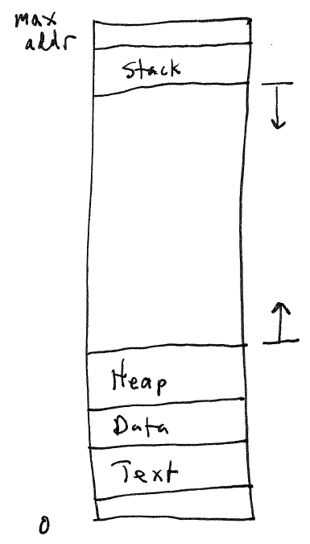
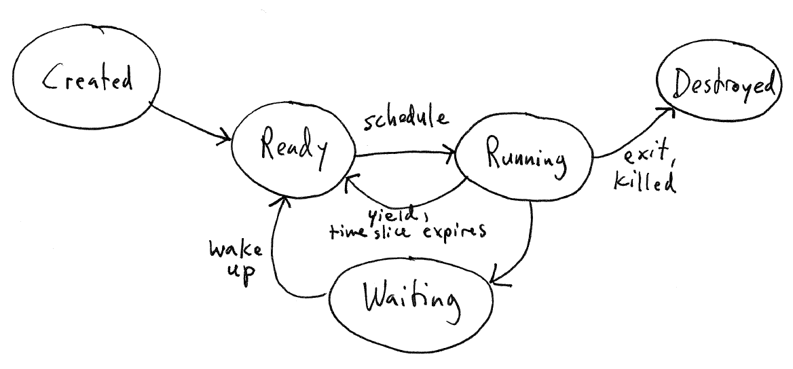
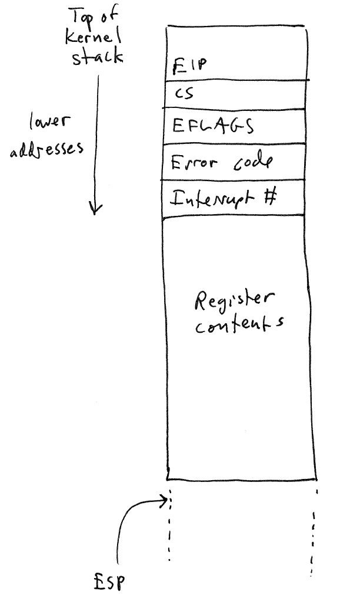

Process = A Running Program

Text: executable code
Data / BSS: Initialized and uninitialized global data
Example C program with global variables
describe which are in data segment and which in bss
Heap: area of memory used to satisfy requests for dynamic allocation
(malloc, new, etc.)
Heap grows as needed
Stack: the stack of activation records containing params, local
vars, return addresses, and temporary data for function calls
Convention: heap grows up in memory (toward greater addresses),
stack grows down from high to low memory
[Process state diagram]
Ready: process is ready to execute, but has not been scheduled on
the CPU yet
Question: if the process is ready, why
isn't it scheduled immediately?
Running: process is executing on the CPU
Waiting: process is suspended, waiting for some future event.
Generally, the OS maintains a data structure storing all relevant
information about the process: the PCB.
Name of the PCB varies by OS. In Linux it is task_struct. In GeekOS it is Kernel_Thread.
Information contained in the PCB:
Process
state: running, waiting, etc.
Program
counter: the next instruction to be executed when the process is
scheduled (where execution will resume)
CPU
registers: the saved values that were in CPU registers when the
process was suspended
CPU-scheduling
information: priority, etc.
Memory
management information: data structures describing the process's
address space
Accounting
information: how much CPU time has been used, etc.
I/O
information: List of file descriptors the process has opened,
and what files/devices they are connected to
Note that all of this information needs to be available from the
PCB, but does not need to be stored in the PCB. For example, many
OS kernels (including GeekOS and Linux on x86) keep saved program
counter and process
registers on the kernel stack
associated with the process. The memory management information is
generally a separate data structure.
E.g., Linux: (look at kernel source
code on-line)
struct task_struct {
volatile long state;
struct thread_info *thread_info;
...
struct mm_struct *mm;
}
Scheduling is the problem activating and suspending processes in
order to allow the system to keep making progress.
Scheduling from the process's point of view:

The OS uses a scheduling policy to decide how to allocate time
slices to processes. Many different policies are possible.
Some possible considerations:
The OS kernel must be able to suspend and resume processes in
response to events (interrupts and system calls). Switching from
one process to another is called a context
switch.
General procedure:
Important concept: User Context vs. Kernel Context
Each process may be considered to have two contexts: a User Context
and a Kernel Context.
The user context is the processor
registers and program counter for user code: i.e., the program that is
running in user space.
The kernel context is the process
registers and program counter for kernel code.
When an event causes a transition from user space to kernel space
(system call, hardware interrupt), the user context is saved and a new
kernel context is created. Because both the user program and the
kernel use procedures, each needs a region of memory to use as a stack
of activation records.
One common design is for each process to have its own kernel stack:
a block of memory used as the activation record stack when the process
is in kernel mode. So, one of the things that happens when there
is a transition from user mode to kernel mode is a switch from using
the user stack to the kernel stack. When control switches back
from the kernel to a user process, it switches from the kernel stack to
the user stack.
A CPU register, the stack pointer,
is used to point to the location (address) of the current activation
record.
On x86 CPUs, a hardware or software interrupt pushes several values
on the stack:
Depending on the type of interrupt, the processor may push an error
code value onto the stack.
The GeekOS interrupt handler code (generated by Int_Err and
Int_No_Err macros in lowlevel.asm) pushes a fake dummy code (if the
processor didn't push a real one) and also the interrupt number, then
jumps to the Handle_Interrupt
code.
Handle_Interrupt then pushes the general-purpose processor registers
on the stack.
So, when an interrupt occurs while executing a user program, the
process's kernel stack looks like
this:

Once this information has been saved, the kernel uses the interrupt
number to locate the interrupt handler function, and calls the handler.
Key point: the above picture describes what a process's stack must
look like any time it is in the Ready or Waiting states: in other
words, states which may lead to the process being scheduled and
entering the Running state.
So, when we create a process for the first time, we need to make the
new process's kernel stack look like this picture.
Resuming a process simply reverses the procedure for suspending (interrupting) it. The contents of the general-purpose registers are restored, the interrupt number and error code are skipped. After this is done, the stack pointer (esp register) is pointing to the saved eflags/cs/eip values. The final step is to execute an iret (return from interrupt) instruction. This uses the saved eflags/cs/eip values to return control to user mode.